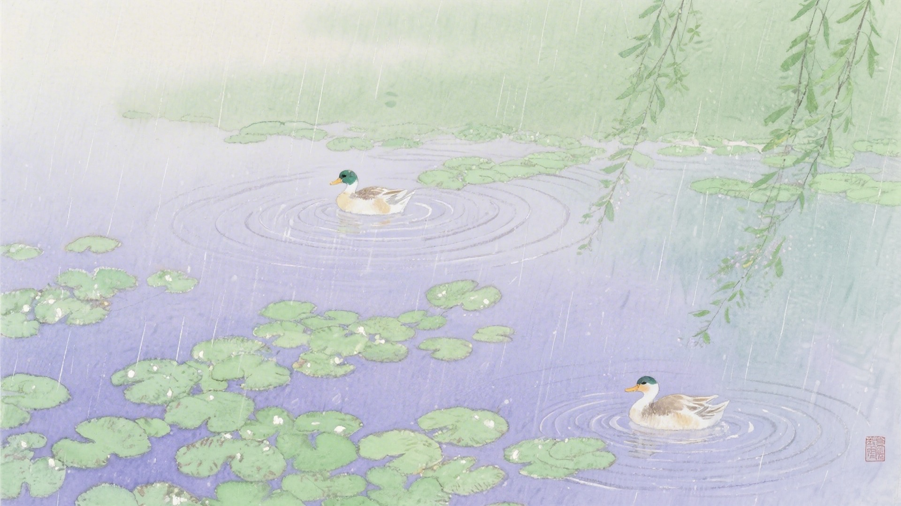
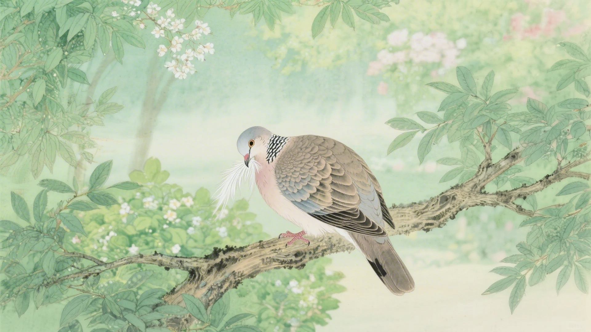
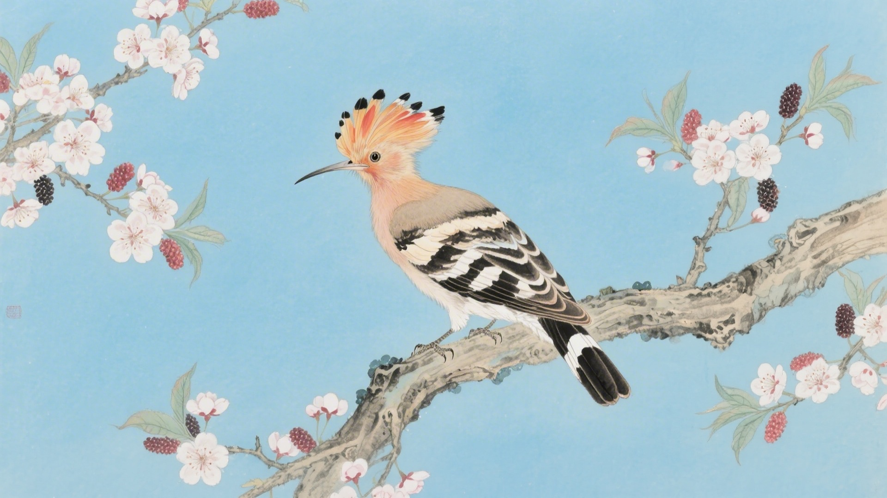
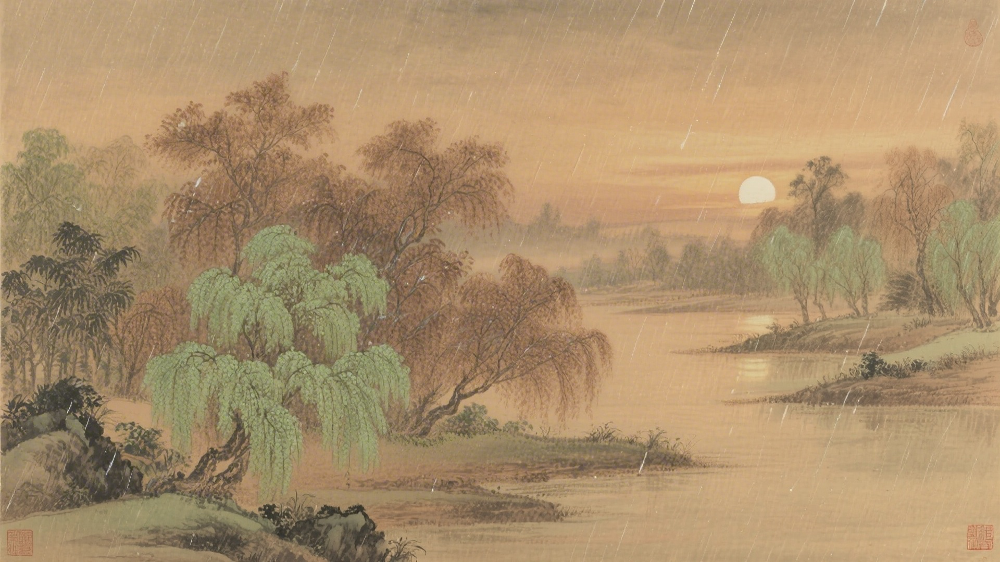
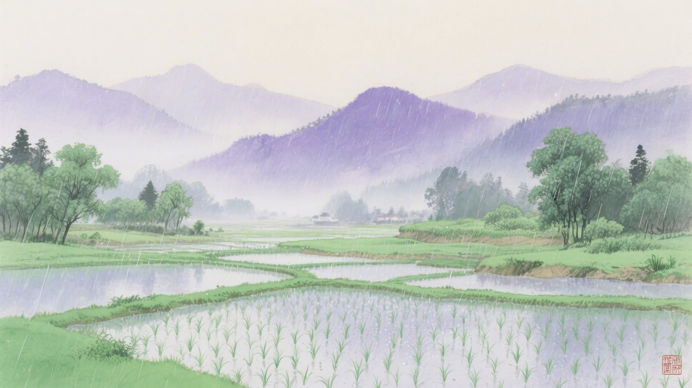

《中国传统色：故宫里的色彩美学》一书中为什么把下面这些颜色归入谷雨节气？
昌荣、紫薄汗、茈藐、紫紶
苍葭、庭芜绿、翠微、翠虬
碧落、挼蓝、青雀头黛、螺子黛
露褐、檀褐、緅絺、目童子
谷雨是春天的最后一个节气。萍开始长了，斑鸠在桑树上叫，戴胜鸟落在头上。古人说谷雨有三候：萍始生，鸣鸠拂其羽，戴胜降于桑。这十六种颜色，便从这三候里来。
谷雨的雨，是百谷之雨。雨水落在田里，庄稼喝饱了，就要往上窜。春天的颜色也喝饱了，变得浓郁，变得深沉，变成夏天的前奏。
对应：谷雨节气一候"萍始生"的起、承、转、合四色。
色彩意象：浮萍初生，水面泛紫。
从淡紫到深紫，是浮萍从初生到蔓延的颜色变化，也是谷雨时节池塘、水田中紫色浮萍竞相生长的色彩。

对应：谷雨节气二候"鸣鸠拂其羽"的起、承、转、合四色。
色彩意象：斑鸠拂羽，春意更浓。
这一组绿色系，是谷雨时节草木疯长、绿意盎然的颜色。

对应：谷雨节气三候"戴胜降于桑"的起、承、转、合四色（其一）。
色彩意象：戴胜鸟落在桑树上。
这一组蓝黛色系，是戴胜鸟头顶五彩羽冠中蓝紫色的绚烂。

对应：谷雨节气三候"戴胜降于桑"的起、承、转、合四色（其二）。
色彩意象：暮春时节，草木将老未老。
从浅褐到深褐，是暮春时节草木由绿转黄的过渡，也是春天即将谢幕的颜色。

谷雨过后，春天就过完了。雨水把庄稼喂饱，把颜色也喂饱。红的变深了，绿的变浓了，紫的变沉了。它们知道，夏天就要来了。

颜色也懂得告别。春天的颜色收收叠叠，把最深最浓的留在最后。像是老戏要散场，主角们轮番出来谢幕，一个比一个惊艳。
（以上解读不代表原书观点）